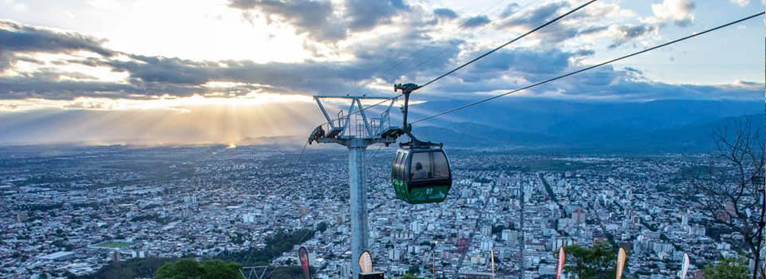

Salta, La Linda: Puerta de entrada al Norte Argentino
La provincia de Salta, conocida cariñosamente como “Salta la Linda”, es uno de los destinos más cautivadores de la Argentina...
Descubriendo los paisajes, culturas y tradiciones del norte argentino
La provincia de Salta, conocida cariñosamente como “Salta la Linda”, es uno de los destinos más cautivadores de la Argentina...

Para comprender por qué Salta es uno de los destinos más completos de Argentina, es necesario mirar primero su perfil físico-natural...
La provincia de Salta puede dividirse en distintas regiones naturales, cada una con paisajes y atractivos turísticos únicos...
Los Valles Calchaquíes son uno de los grandes tesoros de Salta. Conforman un paisaje de montañas rojizas, pueblos históricos como Cachi, Cafayate y Molinos, y una riqueza cultural única. Aquí el patrimonio arqueológico y arquitectónico convive con el turismo actual, ofreciendo circuitos bien organizados, alojamientos acogedores y una gastronomía destacada que incluye desde empanadas hasta vinos de altura.
Salta es sinónimo de vino de altura, y Cafayate es su capital indiscutida. El Malbec se ha consolidado como el varietal tinto más reconocido, ofreciendo vinos intensos y de gran cuerpo. El Torrontés, la uva blanca más característica de la región, también se produce en esta zona y aporta aromas frescos y florales. La Ruta del Vino invita a recorrer bodegas, degustar diferentes variedades y disfrutar maridajes que combinan gastronomía regional con experiencias culturales y sensoriales inolvidables.
La Puna salteña sorprende con escenarios irrepetibles: las Salinas Grandes, el pequeño pueblo de Tolar Grande, el enigmático Cono de Arita y los Ojos de Mar. La biodiversidad incluye flamencos rosados, vicuñas y cardones que sobreviven en condiciones extremas. Es el destino perfecto para quienes buscan turismo de aventura y paisajes únicos en el mundo.
La Quebrada de las Conchas, camino a Cafayate, despliega formaciones rocosas esculpidas por la erosión, como el Anfiteatro y la Garganta del Diablo. En contraste, el Valle de Lerma ofrece un clima templado y suelos fértiles donde prosperan cultivos de tabaco y viñedos. Ambos escenarios son paradas obligadas en excursiones regulares.
Al este de la provincia, las Yungas sorprenden con su verdor, nieblas y biodiversidad. Tucanes, monos y tapires habitan este ecosistema subtropical protegido en parques nacionales como El Rey y Baritú. Es el destino ideal para el ecoturismo y la observación de fauna.
Salta también apuesta por el turismo alternativo: trekking, cicloturismo y experiencias comunitarias que permiten compartir la vida de pueblos originarios. Todo esto con un enfoque de turismo responsable, que busca conservar el ambiente y generar un equilibrio entre la naturaleza y la actividad turística.
La provincia se organiza en diversas regiones turísticas. La región capital concentra historia y cultura; los Valles Calchaquíes ofrecen tradición y vinos; la Puna deslumbra con paisajes extremos, y las Yungas invitan a vivir la naturaleza. Juntas forman un mapa turístico completo que convierte a Salta en uno de los destinos más atractivos de Argentina.